世道变了，小黄毛居然比戴眼镜的斯文懂礼貌[捂脸]
多少码呢兄弟们
谁懂，我要被笑死了[笑哭][笑哭][笑哭] 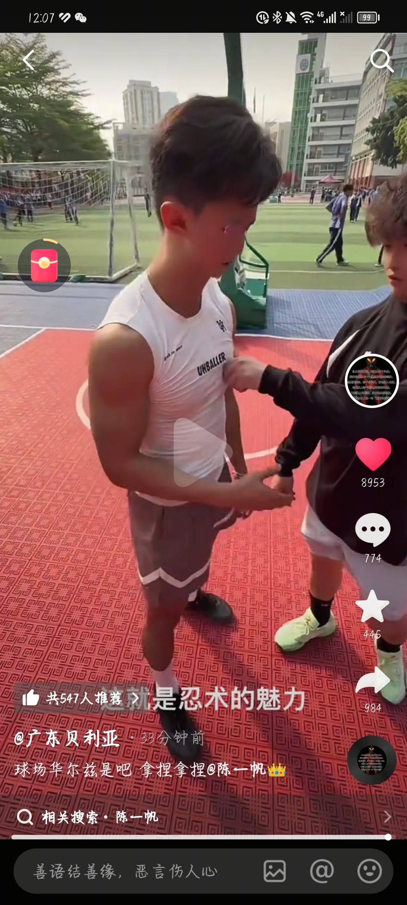
有一说一，胶头滴管真的是我糖又糖不过，帅又帅不过，打又打不过的存在，大跳投太帅了[捂脸]
没回复就是看上了
看了半天没认出陈一帆[愉快]
凭什么他可以连吃带拿！！！[微笑]
我就是因为我岳母，所以才追的我老婆。都结婚一年多了 至今不敢表白。
省流：给妈妈找的年轻伴侣[微笑]，怕别人说闲话落女儿头上
小伙子见好就收的道理不懂啊[捂脸]回头人家母女一心他就废了[捂脸]
我活的太正经太普通太封闭了 自从关注了这几个律师一天天被震惊好几次[尬笑]
开头第一句留下了雄鹰般的女人
最能吃苦的那代人回来了
能修能修能修 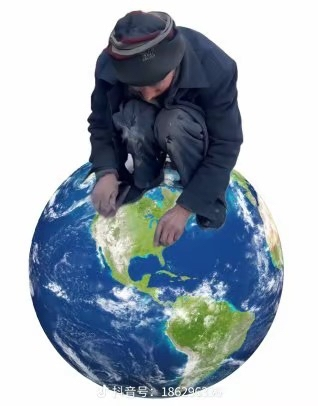
说实话，麦叔演的汉尼拔是真的帅，但是这个汉尼拔我是真的怕[流泪][流泪][流泪][流泪][流泪][流泪]
感觉自从疯人院做第一期开始，这类独白式的电影解说就越来越多了[宕机]
所以一开始就该听铁军的，回到铁军生活的城市，做一名普通的警察…
四郎还是那个被出轨的人，依萍还是在被浇水后认识了意中人，谢霆锋还是那个爱上了已婚之妇的人
为什么这部剧我最心疼毛杰[流泪]，总感觉毛杰最深情
四郎年轻的时候也不年轻[笑哭][笑哭]
赵薇真的好漂亮，现在的女星一个个化那么浓的妆，这种自然天然的美，还是更加的震撼。
没人夸一下柳云龙吗？我觉得他很帅很man
这么多年，总算知道玉观音讲了些什么[比心]
佟大为和何润东我还勉强能偏向佟大为，可是谢霆锋和陈建斌，啊[泪奔]对不起陈建斌，谢霆锋演啥我都偏向他[捂脸]
赵薇身上的这件衣服，80后你们穿过没，特别小的一件，弹力超大 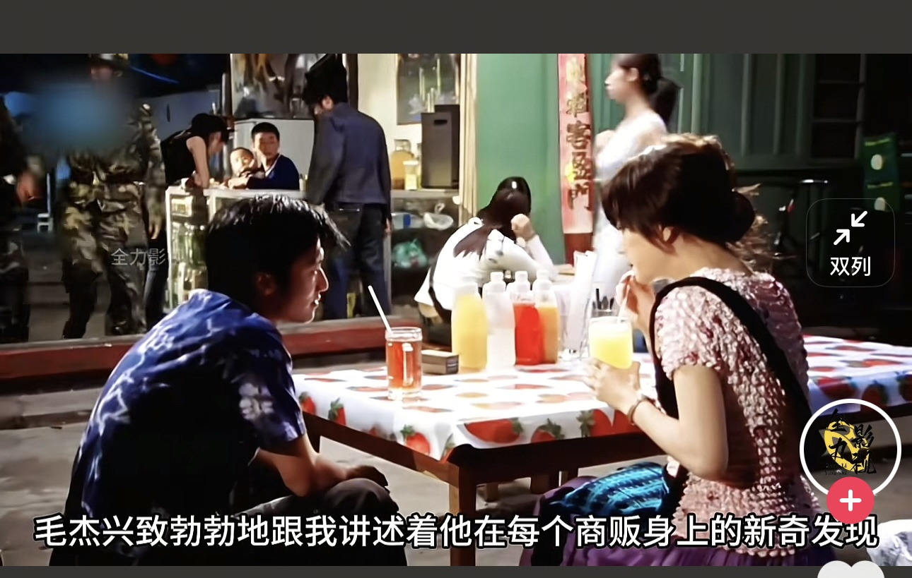
陈建斌：在哪我都给别人养孩子？
这么多年第一次听明白了玉观音的剧情到底怎么回事儿[呲牙]
这张脸谁看了都会心动吧[发呆][发呆][发呆][发呆]
这次泼的水，比可云泼得那次好看[皱眉]
妈呀，什么时候赵薇演过安心？谁能告诉我，我一直看的是孙俪和何润东演的
多死几次就习惯了，第一次大家都紧张[九转大肠]
ee有时候干通宵，通宵完了一大早还在播，播完休息几个小时晚上又起来播了，不是爱工作，小孩纯瘾大
脑子：史 眼睛🤓👍：豪刊 耳朵🤓👍：豪挺 嘴🤓👍：豪赤 我:压此键召唤我回来我还要赤 👇️
那我也要露一手了[左上][送心] 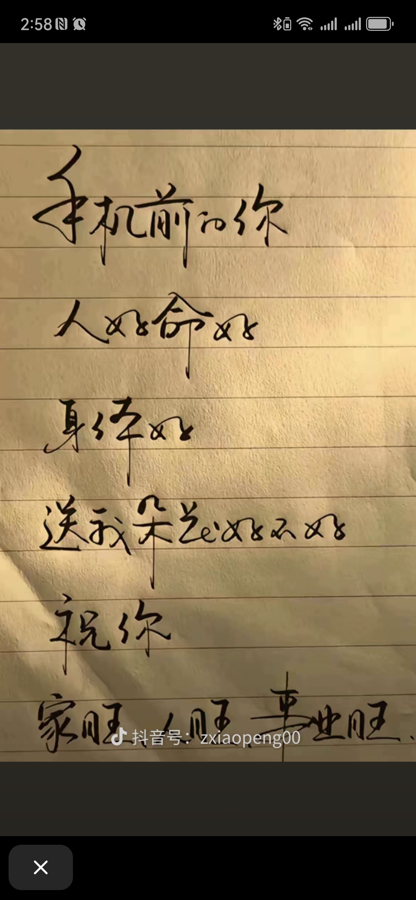
我也有
我绣的半成品小王子，我对象说是特朗普[流泪] 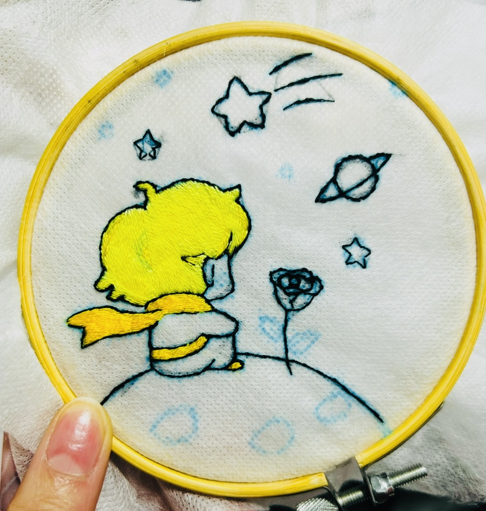
可还行[比心] 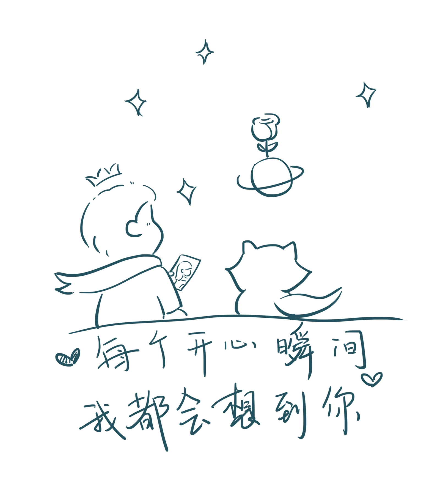
爱其实克服不了远距离，我们也不能在一起了。 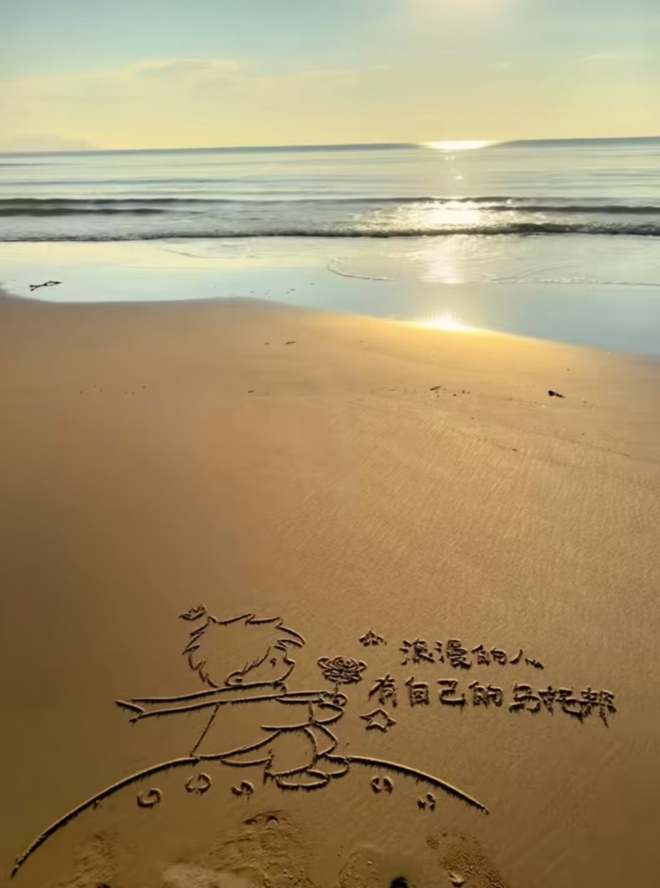
马上送我去海边 我现在强的可怕[咒骂]
老师傅手叉腰说你来[微笑] 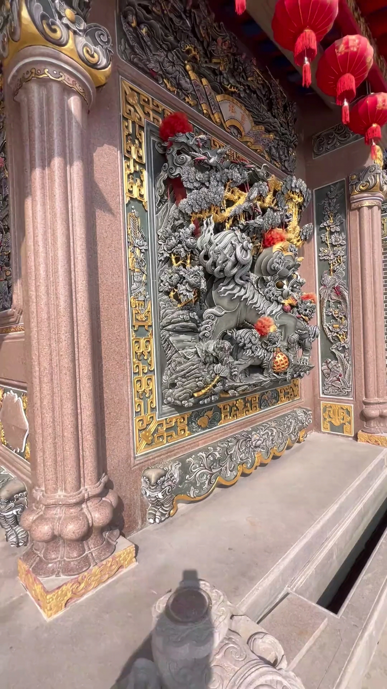
有人会说什么古代工匠精神，机器做的没有灵魂，其实主要是古代工匠没有数控机床，他们要是有的话用得比谁都欢
这种也能用程序雕吗？[暗中观察]
数控雕没问题，老师傅雕也没问题，就怕你数控雕出来，还卖我老师傅的价格[尬笑]
然后我会犟这没有灵魂。[看][看][看]
老师傅说献丑了[得意] 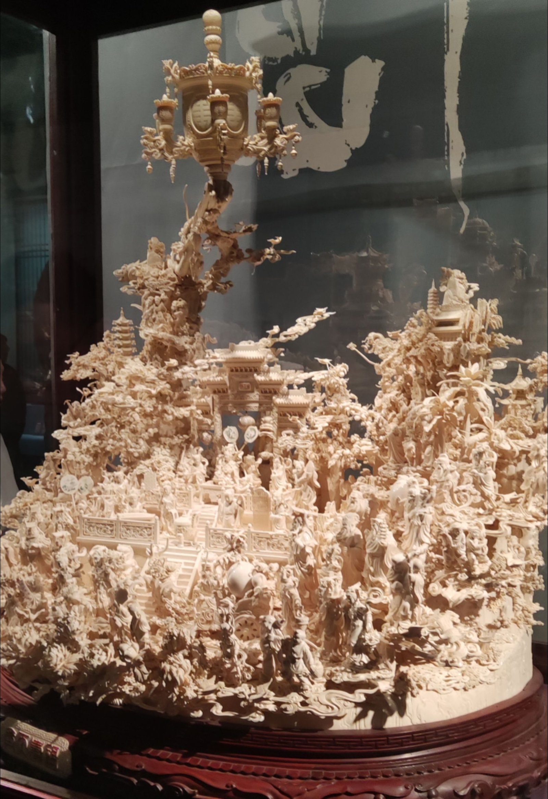
疫情三年你都阳不起来[看]
[看]冰箱里肯定是想多一员了，拿着霞红章鱼，开灯，关灯的，[再见]还给它折腾的反应不过来了
那个年代做的里番都特别用心，不像现在的ppt[流泪][流泪][流泪]
拍迪迦的时候大家都以为这会是圆谷最后一部奥特曼作品了 所以全体都是花心思认真对待的
有个女生刚才看我了，她猥亵我了[再见]
好的，我去搞基行了吧[黑脸]
我们用刻薄的评论，试图唤醒最初的法老
“法老怎么可能保持中立”
明明能做出来东西不知道这两年一直抽的什么风[捂脸][鼓掌]
这张专辑甚至是在关税战时期发出来的，法老真生于未来了[流泪] 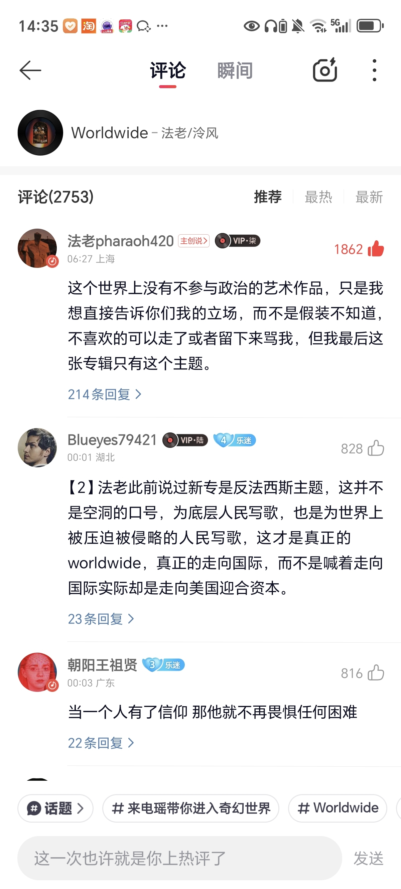
法老之前就是手机玩多了[捂脸]
看见法老/泠风 这把就有了[灵机一动]
法老现在这样我真信那句话了。玩手机玩的[捂脸]
终于来了首正在的法老[舔屏]前段时间感觉法老被盗号了一样[憨笑]
法老+泠风神无敌，特别喜欢《我想》和《镜花水月》
刚刚翻了翻法老20年专辑的《生于未来》发现了一位，这哥们也生于未来[流泪][流泪] 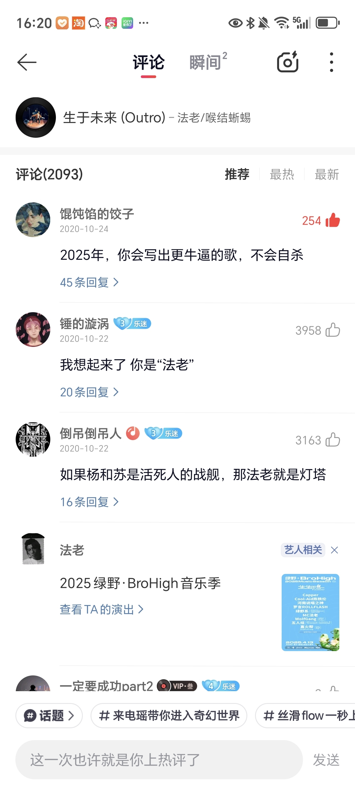
鼠尾草顶号了[黑脸]
这才是真正的音乐，就像这首专辑里说的，说唱曾是为反抗而生，为世界的不公而鸣
他不能一早就想好了最后一张专，搞点爆的然后被ban掉吧[呆无辜][呆无辜][呆无辜]
公众人物敢把左翼右翼这些政治问题写到里面已经足够了，这个世界明明都是人民当家做主，但现在正在被一点点改变，总有些人想做出一些极右翼派的事，不管国内还是国外，比如代金券当工资发，还有Q币当工资发
自从这张结账单发酵后，蛇哥就退出互联网了[捂脸]
开始看到那个妈妈不能控制唾液分泌就猜到估计不行了[流泪][流泪][流泪]
“肾上腺素，请……请再给我90分钟！”[流泪][流泪][流泪]
听过一段话，菩萨救不了所有的人，所以创造了妈妈，妈妈会尽力的保护她的孩子。泪目
天天哭死在抖音里，哭完这家哭那家[泣不成声][泣不成声]
这个妈妈用了最后的肾上腺素坚持救了自己的孩子[流泪]
神不是万能的，所以才创造了妈妈
伟大的妈妈都坚持那么久了，为什么没有继续坚持下去[流泪][流泪]
刷到这个视频还真带6[发呆] 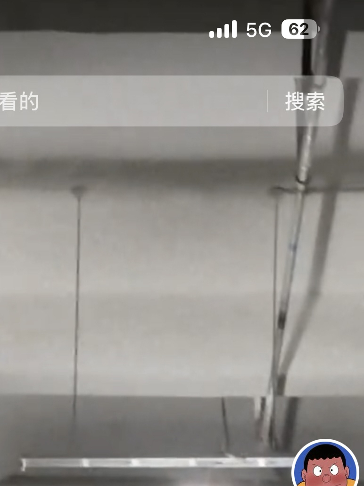
愿全天下的妈妈们都 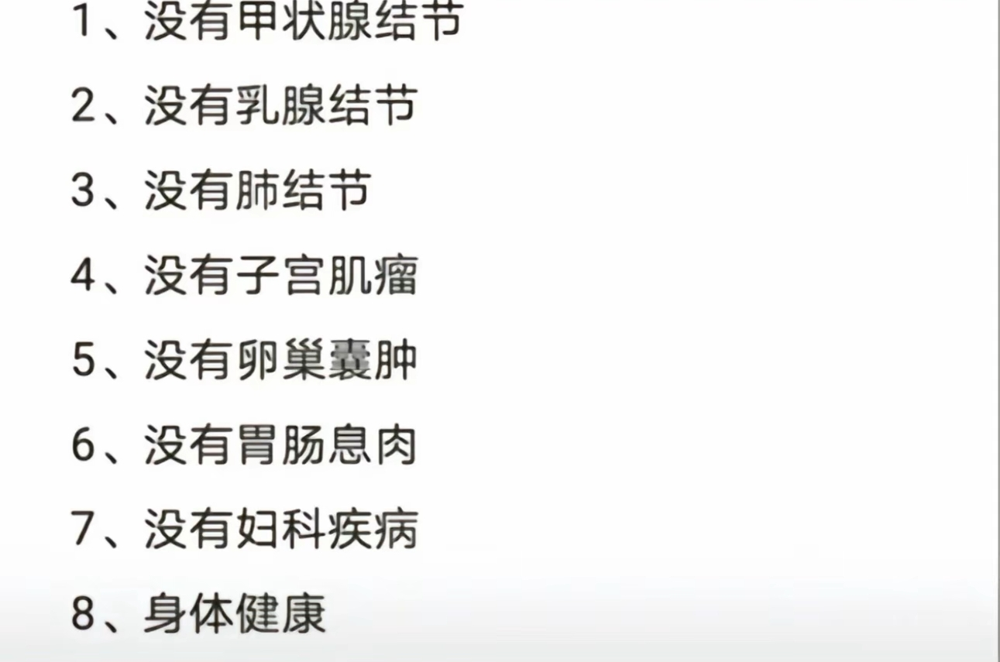
语文的起点太高了，上来就是各种极致的情感，宏大的背景，精巧的构思，严谨的结构。那时候小小的老子能懂个Damn。[微笑]
忘不了柳宗元那首：“千山鸟飞绝，万径人踪灭。孤舟蓑笠翁，独钓寒江雪”。开头一字千万孤独[流泪][流泪][流泪]
Read more: